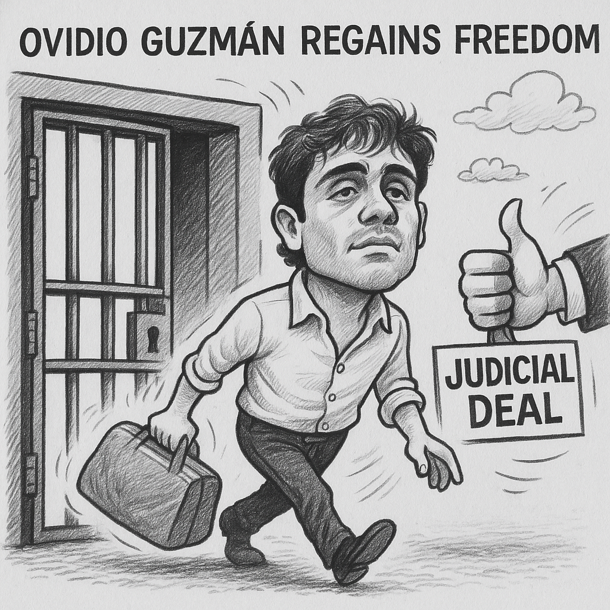

Ovidio Guzmán Recobra Libertad en Estados Unidos Tras Pacto Judicial
Un acuerdo de culpabilidad con la justicia estadounidense libera a Ovidio Guzmán, hijo de “El Chapo”, y abre nuevas interrogantes sobre su futuro y el combate al narcotráfico.
En un giro noticioso que suscita diversas interpretaciones en los ámbitos judicial y político, Ovidio Guzmán López, hijo de Joaquín "El Chapo" Guzmán, fue excarcelado de un centro penitenciario en Chicago, Illinois. Esta liberación se produce como resultado de un convenio de culpabilidad alcanzado con las autoridades estadounidenses, cuyos términos específicos no han sido detallados públicamente en su totalidad.
El acuerdo, según fuentes cercanas al caso, implica el reconocimiento de responsabilidad por parte de Guzmán López en ciertos cargos federales en Estados Unidos. A cambio, se presume que se habrían ofrecido beneficios que condujeron a su salida de prisión. Este tipo de estrategias legales son comunes en el sistema judicial estadounidense, donde la negociación de culpabilidad busca agilizar procesos y obtener cooperación en investigaciones más amplias.
La excarcelación de Ovidio Guzmán plantea interrogantes sobre el futuro de su situación legal y su posible papel dentro de la estructura del crimen organizado. Si bien el acuerdo con la justicia estadounidense representa un avance en uno de los procesos legales que enfrenta, no se descarta la posibilidad de que existan otras investigaciones o requerimientos judiciales pendientes.
Este acontecimiento se suma a la compleja trama legal que rodea a la familia Guzmán y a las operaciones del cártel de Sinaloa, generando un debate sobre la efectividad de las estrategias de persecución penal y los impactos de este tipo de acuerdos en la lucha contra el narcotráfico transnacional. La noticia ha generado reacciones diversas, desde la cautela ante las implicaciones futuras hasta el análisis de las tácticas legales empleadas por ambas partes en este caso de alto perfil.